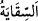
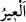

Gördüğüm şu hâl uyanıklık mıdır rüyâ mı?
Kendimi bu kadar azabdan sonra böyle rahatta görmek
Bünyamin: “Artık senden ayrılmam!” diyerek eteğine sarılınca Yûsuf (a.s.):
“Babamın benden dolayı ne kadar gam ve kederlere gark olduğunu biliyorsun. Seni
yanımda tutacak olursam, gamı iyice artar. Seni yanımda bırakmanın tek yolu seni yüz
kızartıcı bir suçla teşhir etmemdir.” dedi.
Bünyamin:
“Tamam, bunun önemi yok, nasıl düşünüyorsan öyle yap.” deyince de:
“Su tasımı senin yüküne saklayacağım. Sonra da seni bana iâde etmelerini sağlamak
için kardeşlerinle beraber giderken su tasını senin çaldığını söyleyeceğim.” dedi.
Bünyamin de: “Tamam” dedi.
“__WORD__”, maşraba, su kabı demektir. Yiyeceklerin ölçüldüğü bir kap hâline
getirilmiştir. Gümüş kaptan içmek önceki şeriatlarda mubah olduğundan gümüşten, veya
billurdan yahut yeşil zümrütten ya da kırmızı yakuttan yapılmıştı. İki yüz bin dinar
değerindeydi ve Yûsuf (a.s.) da bu tastan su içerdi.
el-Kevâşî’de şöyle der: “Bu kap mücevherlerle süslü altından bir kaptı. Yûsuf (a.s.)
kardeşlerine değer verdiğini göstermek için yiyeceklerini bu kapla ölçtürdü.”
Kâşifî der ki: “Melik o kapla su içerdi. Yemeğin îtibar ve nefâseti cihetiyle o kadehi
sofraya koymuştu.”
Mısır’dan Suriye’ye doğru ayrıldıkları sırada Yûsuf kardeşlerini durduracak
birilerini gönderdi. Onlar da durdular.
Kafile hareket ettikten “sonra bir tellâl” yani Yûsuf (a.s.)’ın görevlilerinden Efrâyim
adlı münâdî: “Ey kafile!” Ey kervandakiler! “Siz hırsızsınız!” diye seslendi.
“ __WORD__ (kafile) ”, Üzerinde yük bulunan develer seferlere gidip geldikleri için onlara
“el-ıyr” adı verilmiştir. Ancak maksad kafile değil, kafiledekilerdir.
Bazıları der ki: Onlara böyle hitap edilmesi, Yûsuf (a.s.)’ın emriyledir. Yûsuf (a.s.)
‘hırsızsınız’ derken onların kendisini babalarından çalmış olmalarını kastediyor
olmalıdır. Bünyamin’inin de onlara dâhil edilmesi, ifadenin çoğunluk dikkate alınarak
söylendiği içindir. Bu ifade, teşbihde mübâlağa kabîlindendir. Yâni Yûsuf’u babasından
tıpkı hırsızlar gibi hâinâne bir şekilde alanlar sizsiniz, demektir. Böylesi târiz; yani söz
dokundurma ve tevriyeler peygamberlerden de sâdır olmuştur.
Rivâyet edilir ki Rasûlullah (s.a.) Bedir’e yakın bir yerde konaklayınca Ebû Bekir
(r.a.) ile birlikte develerine binip Süfyan adlı yaşlı bir Arab’ın yanına vardılar.
Peygamber Efendimiz (a.s.) ona Kureyş hakkında, Muhammed ve ashabı hakkında neler
bildiğini sordu. İhtiyar: